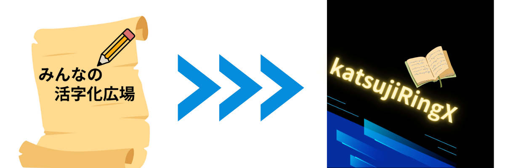

日本の古文書や崩し字の解読が、最新の技術によって大きく変わりつつあります。KatsujiRingXは、個人の筆跡の特徴に注目し、 これまで解読できなかった文字を、より簡単に読み解く技術を開発しています。 これまで膨大な時間と専門知識が必要だった古文書の解読が、今では効率的になりつつあります。一人一人の書き手の独特な文字 スタイルを丁寧に分析することで、歴史研究や文化財保存に新しい可能性をもたらしています。
本記事では、KatsujiRingXがどのように進化したのかを紹介します。
KatsujiRingXは、OCR技術を活用して活字化の作業をアシスト！さらに、文字に関するクイズやゲームの導入で楽しく学べる 環境を提供しています。
崩し字解読への道
日本の古文書に用いられる「崩し字」は、その複雑さと多様性から、デジタル化や文字認識の最も困難な課題の一つでした。
KatsujiRingXは、独自のアプローチを取っています。個人の筆跡スタイルを丁寧に研究し、継続的に改良することで、手書き文字の認識に 特化しています。一般的な文字認識とは異なり、このプラットフォームは個人の文字の特徴に深く焦点を当てています。歴史的な人物や古文書 にわたって、徐々にその能力を拡大することを目指しています。
図1:「みんなの活字化広場」からKatsujiRingX
KatsujiRingXが「みんなの活字化広場」と比較して進化したポイント
KatsujiRingXの特に注目すべき特長は以下の通りです
- OCRサポート機能：今まで読めずにいた文字をOCRサポートで簡単に
- ゲーム・ミッション：文字の読解をよりできるように組み込まれた学習システム
- 人物別モデル：一人の人物の特徴を学習したモデル
- 連続学習システム：ユーザーからのフィードバックを取り入れ、継続的に精度を向上させる仕組み
意見募集中
— 教授
KatsujiRingXの新機能
2025年4月にリリースされた最新バージョンでは、さらに革新的な機能が追加されました。
縦書き活字化
日本語の縦書き表記に最適化された直感的なエディタを使用して、手書き文書を効率的に活字化できます。
文字認識
OCR技術を活用して、画像内の文字を認識。手書きの文字も高精度で検出し、活字化作業をアシストします。崩し字も認識可能です。
学習ゲーム
活字化や文字に関するクイズやゲームで楽しみながら知識を深められます。達成感を得ながらスキルアップできます。
進歩管理
活字化の進捗状況をリアルタイムで視覚化。作業時間の記録や統計情報を確認して効率的に作業を進められます。プロジェクト単位での管理も可能です
活用事例
KatsujiRingXは既に教育現場で活用されています。以下に導入事例を紹介します。
大学での活用
鎮西学院大学(Nagasaki Wesleyan University)では、ゼミ活動の中でKatsujiRingXを利用しています。 学生たちは、古文書を撮影し、画像をアップロードして解読をするといった手順で作業を行なっています。 これまで、難しいと感じていた古文書との距離を、テクノロジーの力で縮めています。
図2:大学のゼミ活動での活用
今後の展望
KatsujiRingXは今後も継続的な進化を続けます。開発ロードマップには以下の機能が予定されています
- AR（拡張現実）解読アシスト：スマートフォンやタブレットのカメラをかざすだけで、リアルタイムに古文書を解読表示するモバイルアプリ
- 認識精度向上：ユーザーからのフィードバックを取り入れ、継続的に精度を向上させる仕組み
まとめ
技術の革新により、かつては読めなかった崩し字や古文書が、より多くの人々にアクセス可能になりつつあります。 KatsujiRingXは単なる文字認識ツールではなく、次世代に伝えるためのプラットフォームとして、今後も進化を続けていきます。
古文書解読に興味をお持ちの方、研究や教育現場での活用をご検討の方は、ぜひKatsujiRingXをご利用ください。